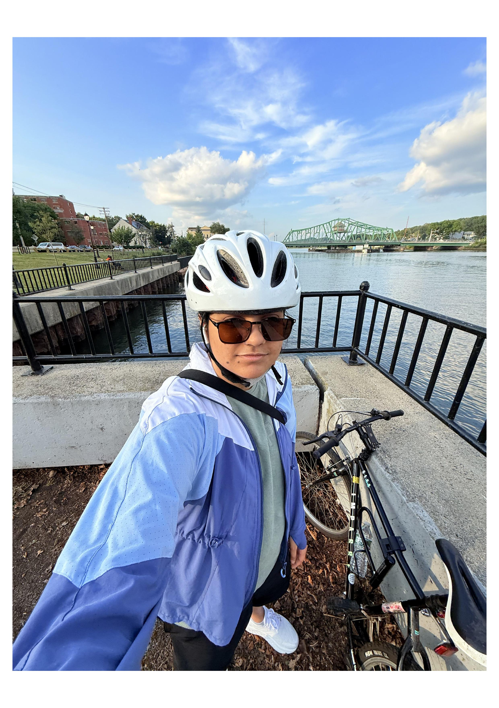

Graduate Researcher — Yale University
Machine Learning emulator for tracer transport in Oceans + Geodynamics modeling (lithospheric drip instabilities)

Over the years, I’ve introduced myself in many ways, but most versions have followed the same predictable format: “Hi, I’m Kavya. I’m XX years old. I’m a YY-year student at insert school name. I love playing table tennis. I like to insert hobbies here.”
June 2025 Version
Hi, I’m Kavya. I’m 23 years old, and for the first time in my life, I’ve started feeling like I’m getting older.
I’m a second-year grad student at Yale. Not long ago, I was at IIT Kanpur.
I still love playing table tennis, though I haven’t played much in the last couple of years. These days, I’m more into biking.
It’s fun, accessible, fits into my schedule, and most importantly it doesn’t require another person to coordinate with — all of which make it pretty appealing.
I also love taking photos. I might share some on this website. Someday, who knows — maybe I’ll become a digital nomad and live off the money I make from photography. Just kidding.…Or am I?
Jan 2026 Version:
Hi, I’m Kavya. I'm 24 years old. I’m graduating with a master’s in Earth & Planetary Sciences from Yale soon (May 2026). I (still) love table tennis — and I’m actually trying to play "more" this semester at Yale. Biking has been off (thanks, East Coast winters). Running is inconsistent, but it’s happening. I might do TD Five Boro Bike Tour in May this year.
I still take photos. A few end up on my Instagram — @kavya.heic. The digital nomad plan is… still on the mood board. If you’re here for the job-app-friendly version, scroll down to experience and education.
Machine Learning emulator for tracer transport in Oceans + Geodynamics modeling (lithospheric drip instabilities)
Supported feature execution and built PostHog dashboards to guide product iteration.
Geodynamics project to study thermal plumes in the mantle (lab experiments + modeling).
Geophysics project to study land subsidence in the New Delhi Region from 2015 to 2021.
2023–2026 · Master of Science, Earth & Planetary Sciences
2019–2023 · Bachelor of Science, Earth Sciences